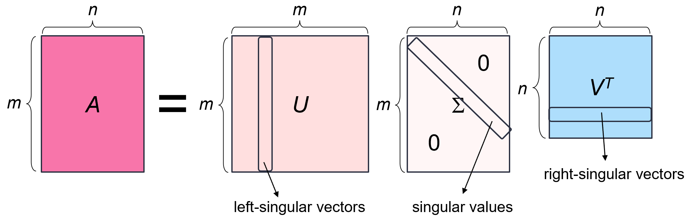
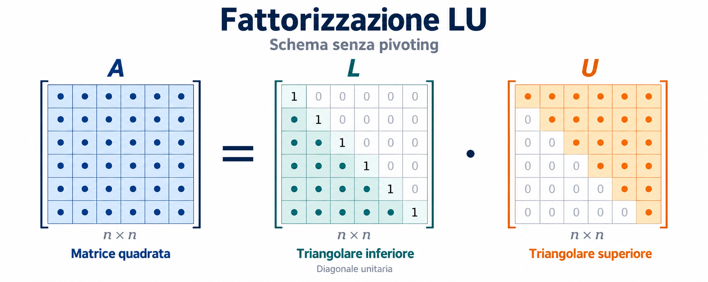
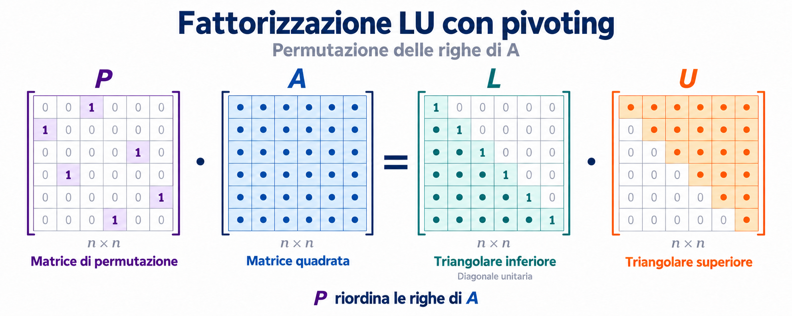
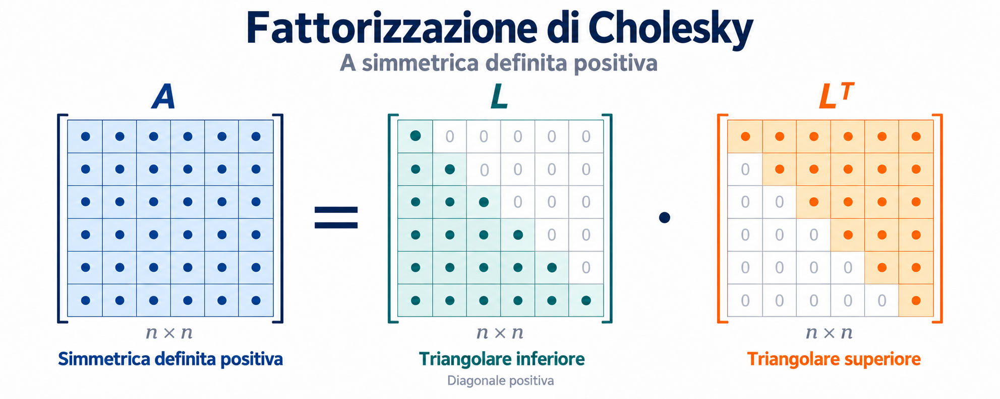

Homework 1: Algebra Lineare e fattorizzazioni#
Esercizio 1) SVD per la classificazione#
Implementa il codice per classificare immagini di numeri, usando la SVD con basi di \(k\) vettori.
Considera due sole classi di immagini (“0” e “1”) e calcola l’accuratezza delle predizioni di classificazione.
Cambia le classi mantenendo la classificazione bi-classe (per esempio usa “0” e “9”, oppure “3” e “8”) e guarda come cambia l’accuratezza.
Cambia \(k\) e guarda come cambia l’accuratezza per le diverse coppie di classi.
Esercizio 2) SVD per la compressione di diadi#
Implementa il codice per caricare un’immagine in scala di grigi e calcolare la sua approssimazione mediante diadi.
Carica l’immagine
data.camera()diskimagee normalizzala con valori in [0, 1];Guarda l’immagine originale;
Grafica i valori signolari (usa sia
plt.plot()cheplt.semilogy());Approssima l’immagine usando \(k=5\) diadi;
Confronta l’approssimazione con l’immagine originale e calcola l’errore relativo di approssimazione (norma di Frobenius);
Guarda le prime 4 diadi.
Poi:
Cambiando \(k\), guarda e calcola come varia la compressione dell’immagine;
Ripeti l’esercizio con altre immagini (ad esempio
data.coffee()odata.coins()).
Esercizio 3) Risoluzione di sistemi lineari#
Considera le matrici
e \(A_3\) come matrice di Hilbert di dimensione n={2, 5, 15, 100}, poi:
definisci il problema test \(Ax=b\) per ciascuna matrice, usando come soluzione esatta il vettore di 1 di opportuna lunghezza;
calcola il numero di condizionamento di A con
np.linalg.cond;calcola la fattorizzazione LU con pivoting e quella di Cholesky (se opportuno) tramite le funzioni
luecholeskydiscipy.linalg;calcola l’errore (in norma) di fattorizzazione per A;
risolvi il sistema lineare con le funzioni
lu_factorelu_solvediscipy.linalge calcola l’errore relativo sulla soluzione;quando possibile, risolvi il sistema con la fattorizzazione di Cholesky tramite la funzione
np.linalg.solvee calcola l’errore relativo sulla soluzione.
RECAP#
Esercizi 1 e 2#
Nella decomposizione \(A=U\Sigma V^T\):

i vettori singolari associati ai valori singolari non nulli costituiscono basi ortonormali per:lo spazio delle colonne di \(A\), attraverso le colonne di \(U\);
lo spazio delle righe di \(A\), attraverso le colonne di \(V\).
Esercizio 3#
Consideriamo ora un sistema lineare quadrato
Il vettore \(\mathbf{b}\) è noto, mentre \(\mathbf{x}\) è il vettore delle incognite.
Data la fattorizzazione \(A=LU\):

il sistema diventa
Ponendo \(\mathbf{y}=U\mathbf{x}\), risolviamo in successione
con sostituzione all’avanti, poi
con sostituzione all’indietro.
Data la fattorizzazione con pivoting \(PA=LU\):

il sistema diventa
Ponendo \(\mathbf{y}=U\mathbf{x}\), risolviamo in successione
Se \(A\) è una matrice simmetrica e definita positiva, data la fattorizzazione di Cholesky \(A=LL^T\):

il sistema diventa
Ponendo \(\mathbf{y}=L^T\mathbf{x}\), risolviamo in successione